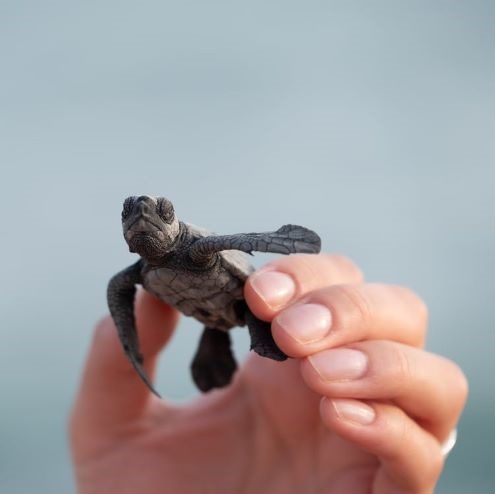
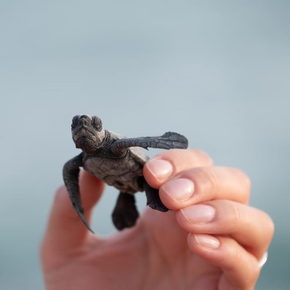

About Our Institute:
You may have deduced by this point that all of the animals in our exhibit do not actually exist. Or even beyond that, we're not a real institute with much real research about Lion Sharks. You may be thinking, why would we go through all of this trouble to provide this (non-existant) information for an animal (that isn't real)?
And the answer is, animals like the Lion Shark and these other fantastic creatures might even very well exist, someday.While we tend to think of these strange animals as a wild imagination, the truth is that there are many more incredible creatures whose existence is nothing short of miraculous. No strange hybrid imagined within a classroom could ever compare. However, our chances to observe, interact, and learn from these decrease every day as the rapidly increasing rate of extinction invades more and more animal species..
How can we protect our dreams for the future without fighting and caring for what we have now?
Here's a list of currently existing animals, courtesy of worldwildlife.org that are strange and wonderful and are sorely in need of our protection. This list is by no means extensive, but it shows how much opportunity we have, even now, and the work we have yet to do. We invite you to learn more! And if you want to help the preservation cause, please check out some of these resources.
- Finless Porpoise
- Blue Whale
- Blue Fin Tuna
- Green Turtle
- Sunda Tiger
- Sumatran Rhino
- Red Panda
- Indian Elephant
- Sea Lion
- Spider Monkey
- Great White Shark
- Polar Bear
- Plains Bison
- Brown Bear
- Pronghorn Sheep
- Monarch Butterfly
Learn More and Help:
World Wildlife Organization: www.worldwildlife.orgAnimal Welfare Institute: www.awionline.org
 
